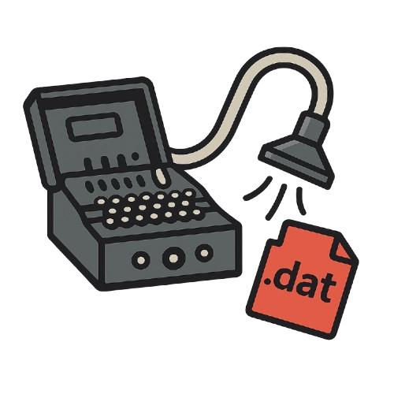

PROJECT
Bitcoin-Tully
Wallet-finding and forensic backup tooling for Bitcoin Core/Knots recovery workflows.

ZZX-LABS R&D // SOFTWARE // WEB MIRROR
Bitcoin Core/Knots wallet-finding and forensic backup workspace for Windows/cmd-style environments, with browser-side inventory, hashing, classification, duplicate detection, and backup-manifest generation for user-selected files.
WALLET FORENSICS / BACKUP INVENTORY
USER-SELECTED FILE INVENTORY
Select files or a directory tree to create a local forensic inventory.
| Path | Size | Type | SHA-256 |
|---|
RECOVERY TARGET CLASSIFICATION
Flag common Bitcoin Core/Knots wallet and backup artifacts by filename/path patterns.
HASH-BASED DUPLICATES
Group byte-identical selected files by SHA-256.
FORENSIC BACKUP RECORD
Export paths, sizes, classifications, and SHA-256 hashes. No raw wallet bytes are embedded.
CHAIN OF CUSTODY
PROJECT
Wallet-finding and forensic backup tooling for Bitcoin Core/Knots recovery workflows.
SAFETY
The browser edition never modifies selected files. Backup copying and drive scanning remain native-side operations.